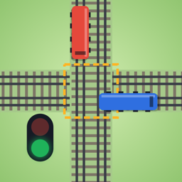

MI TREN NO PARA
CRUCE DE TRENES
Eres el guardagujas. Cambia las dos agujas para que los trenes nunca coincidan en el cruce… y no les hagas esperar: ¡si se cansan, se saltan el rojo!
- Trenes de pasajeros, trenes bala, locomotoras de vapor y VIP.
- Cuatro mapas con su propia regla: Clásico, Nieve (vías heladas), Desierto (tormentas de arena) y Tokio (hora punta).
- Misiones, reto diario y monedas para desbloquear mapas.
Muy pronto en la App Store y en Google Play.